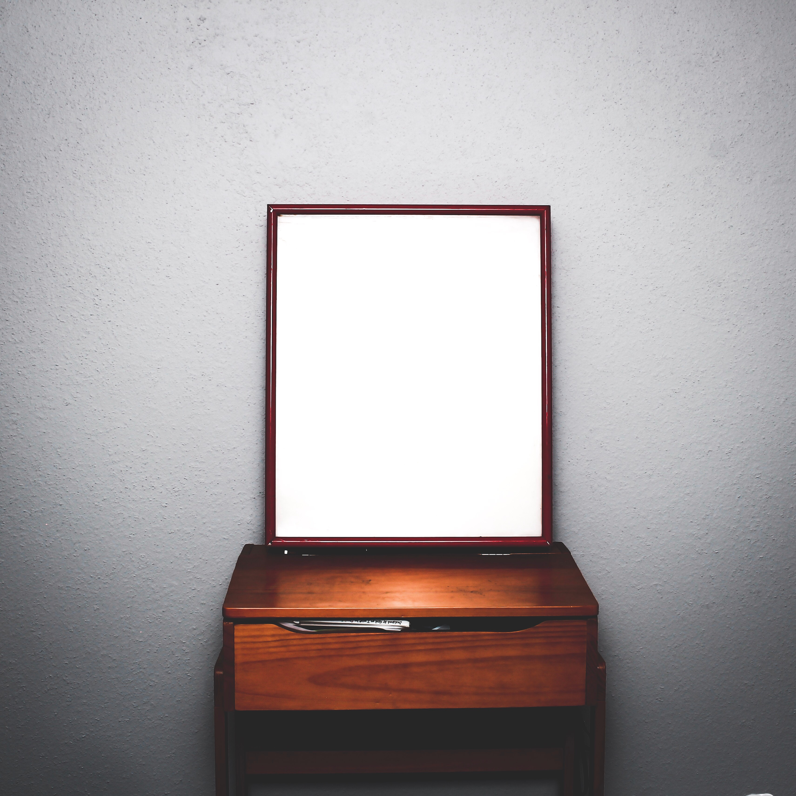

Setup
Welcome to Mirror.
To get you started on Mirror we will first have to change some settings to let you fully experience the mirror.
Let's go!

Setup 1/3
Create a user
To personalize your experience you need to create a user. If multiple people will be using the mirror you may want to create multiple users.
Create a user
Back

Setup 1/3
Create a user
Name *
Next
Back
Setup 2/3
Sound
Play sound
Uses the inbuilt speaker to alert you when the time limit passes.
Time limit (minutes)
Next
Back
Setup 3/3
Add extensions to your user
Google Calendar
Log in using your Google Account. The mirror will only get access to your calendar. Your information stays on your mirror.
Connect with Google Calendar
Calendar URL
If you have an iCal url or an url ending with .ics you can fill it out below.
Add another
Save user
Back
Finish
You are set!
You are ready to use your new mirror. Click below to go to the dashboard. Or create another user for your mirror.
Finish setup
Add user